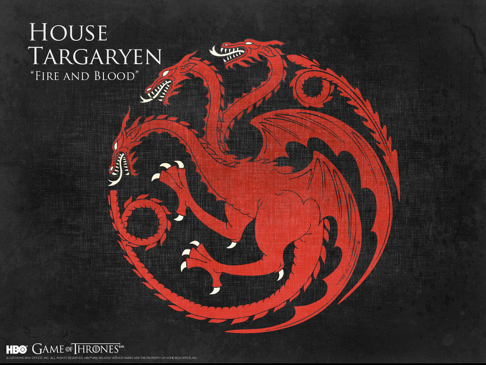

발리리아 귀족 풍습인 근친혼으로 혈통의 순수성을 보존해 오고 있으며[9] 드래곤의 왕가로도 불린다. 발리리아인 특유의 연보라색 빛깔을 띠는 눈동자[10]와 은발 혹은 옅은 백금발이 특징이다. 이국적인 머리색, 눈색과 별개로도 수려한 외모는 덤으로, 대다수의 타르가르옌 가문 사람들은 잘생겼다거나 아름답다는 표현이 따라다닌다. 타르가르옌 가문의 혈통엔 드래곤 로드 특유의 드래곤을 제어할 수 있는 힘이 있고, 근친혼 풍습은 이 때문으로 보인다. 이와 관련이 있는지, 가끔씩 예지몽을 꾸는 인물도 태어난다. 발리리아가 멸망할 때 혼자 멸문을 피하여 마지막 드래곤 로드 가문이 된 것도 전적으로 예지몽 능력 덕분이다. 다만 다른 가문의 피가 섞인 혼혈들의 경우 이 능력이 약해지는지, 아니면 그대로 살아남는지는 불명이다. 하지만 근친혼의 부작용인지 수려한 외모나 여러 신비한 능력과는 반대급부로 미친 사람들도 많이 나온다. 바리스탄 셀미의 말로는 '광기와 위대함은 동전의 앞뒤와도 같다'고 하고, 세르세이 라니스터는 조프리 바라테온의 광기가 자신의 근친상간 탓이 아닐까 두려워하며 '타르가르옌 가의 인간이 태어날 때 신들이 동전을 던진다고 하지.'라고 말한 적이 있다. 동전이 앞면이면 정상, 뒷면이면 미친놈 또한 마찬가지로 몸이 허약하거나 병든 인물들도 많이 태어나며, 가끔씩 용의 비늘을 가진 기형아를 사산하는 경우도 있다. 또 다른 특징으론 열에 대해서 일반인들보다 조금 더 저항력이 있다는 것이다. 대표적으로 에그와 대너리스 타르가르옌의 경우 주변 인물들은 다 덥다는 날씨에 오히려 원기라도 충전된 듯 쌩쌩하게 돌아다닌다든가, 뜨겁게 달구거나 비슷한 상태인 물건을 들고서도 별다른 증세가 없는 모습을 보여준다. 다만 편견과 다르게 불에 붙으면 남들과 같이 얄짤없이 타 죽는다. 대너리스가 드래곤을 부화시키며 불에 타지 않은 것은 마법의 힘이다. 여담으로 작가의 초기 설정에 따르면 용을 타는 능력이 아니라 불을 다루는 능력으로 구상했는데 바꾸었다고 한다. 이 외에 사람들이 또 하나 착각하는 사실이 타르가르옌 가문에는 은발 외의 형질은 절대 나오지 않는다는 건데 우성이긴 해도 다른 형질과 결혼하면 흑발 등의 머리색은 잘만 나온다. 당장 바엘로르 타르가르옌과 던칸 타르가르옌만 해도 흑발이었다. 그런데 어째 검은 머리 타르가르옌은 왕위에 못 오르는 징크스가 있다.그리고 용으로 세상을 호령한 마지막 드래곤 로드의 후예라는 점 때문인지 은근히 선민의식도 가지고 있다. 작중 나오는 가문의 인물들이 유독 드래곤의 혈통을 강조하기도 한다. 역사적인 모델은 노르만 왕조, 혹은 이민족 왕조라는 점이나 혈통 유지를 위한 근친혼 등을 봤을 때 프톨레마이오스 왕조로 보이고, 반지의 제왕에 나오는 엘렌딜 왕조와 요정 왕조와도 비슷하다. 장례는 전통적으로 화장으로 치른다.